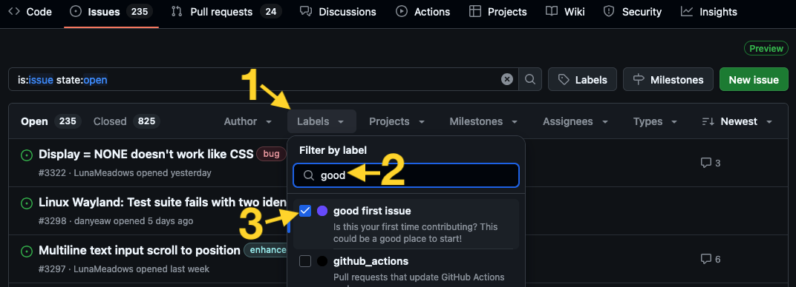

Hướng dẫn Sprint¶
Chào mừng đến với BeeWare Sprints!¶
Chào mừng bạn! Chúng tôi rất vui vì bạn đã quyết định tham gia cùng chúng tôi! Nếu bạn chưa giới thiệu bản thân với một thành viên nào đó trong Đội Bee, hãy làm điều đó ngay nhé. Sau khi đã làm xong, hãy quay lại đây để bắt đầu.
Sprint là gì?¶
Một đợt sprint là một cơ hội không theo khuôn khổ cố định để dành vài giờ hoặc vài ngày làm việc cùng nhau trên một dự án mã nguồn mở. Các đợt sprint thường gắn liền với một hội nghị; một đợt sprint sau hội nghị tạo cơ hội để biến năng lượng, sự nhiệt tình và sự quan tâm mà hội nghị đã khơi dậy thành những cải tiến cho phần mềm mà chúng ta sử dụng hàng ngày.
Các đợt sprint cũng là cơ hội để giới thiệu cho mọi người về quy trình đóng góp cho dự án. Chúng tôi hy vọng rằng bạn sẽ cảm thấy vô cùng hứng thú khi tham gia đóng góp trong đợt sprint này, đến mức khi về nhà, bạn vẫn tiếp tục đóng góp!
Không quan trọng bạn có bao nhiêu kinh nghiệm. Trong các đợt sprint trước đây, chúng tôi đã tích hợp các đóng góp từ những người ở mọi trình độ kinh nghiệm — từ học sinh trung học, những người vừa tốt nghiệp khóa đào tạo lập trình, những người không tự nhận mình là lập trình viên, cho đến các nhà phát triển dày dạn kinh nghiệm. Dù trình độ kinh nghiệm của bạn ở mức nào — chúng tôi cũng sẽ tìm ra cách để bạn có thể đóng góp.
Viết mã cũng không phải là cách duy nhất để bạn có thể đóng góp. Một dự án như BeeWare không chỉ gói gọn trong mã nguồn – chúng tôi cần những người viết, hiệu đính và dịch tài liệu; chúng tôi cần những người cải thiện thiết kế trang web; thậm chí việc rà soát các lỗi đã được báo cáo từ nhiều năm trước và xác nhận rằng chúng đã được khắc phục trong quá trình phát triển cũng là một đóng góp quý giá.
Những câu hỏi ban đầu¶
Để giúp bạn bắt đầu, chúng tôi sẽ đặt ra một vài câu hỏi nhằm đánh giá sở thích và kinh nghiệm của bạn. Điều này sẽ giúp chúng tôi tìm ra cách tốt nhất để bạn có thể đóng góp. Hãy trả lời các câu hỏi, ghi chép lại, sau đó tìm một thành viên của Bee Team và chia sẻ câu trả lời của bạn. Nếu bạn không hiểu câu hỏi được đặt ra – đừng lo lắng! Hãy cho chúng tôi biết những gì bạn biết, và chúng ta sẽ cùng nhau tìm hiểu từ đó.
- Bạn đã từng sử dụng BeeWare chưa?
Nếu bạn chưa làm, hãy bắt đầu bằng cách thực hành theo Hướng dẫn BeeWare. Tài liệu này sẽ giới thiệu cho bạn về dự án BeeWare là gì và các thành phần của dự án kết hợp với nhau như thế nào. Nếu bạn gặp bất kỳ vấn đề nào trong quá trình thực hành hướng dẫn, hãy ghi chép lại — bởi vì việc đảm bảo không ai khác gặp phải vấn đề tương tự là một chủ đề tuyệt vời cho bài đóng góp đầu tiên của bạn!
Khi bạn đã hoàn thành hướng dẫn đến ít nhất là bước 4, hãy chuyển sang câu hỏi tiếp theo.
- Bạn đang mang theo những thiết bị máy tính nào?
Thiết bị bạn đang sử dụng sẽ đặt ra những giới hạn thực tế đối với những công việc bạn có thể tham gia. Ví dụ, nếu bạn dùng máy tính xách tay chạy Windows, bạn sẽ không thể làm bất kỳ công việc nào liên quan đến iOS. Máy tính xách tay của bạn chạy hệ điều hành Windows, macOS, Linux hay hệ điều hành khác? Điện thoại của bạn là thiết bị iOS hay Android? Các thiết bị của bạn do công ty cung cấp hay là thiết bị cá nhân của bạn?
- Bạn có bao nhiêu kinh nghiệm viết mã Python?
Bạn mới bắt đầu học lập trình? Hay là một chuyên gia Python? Hay là một lập trình viên dày dạn kinh nghiệm nhưng mới bắt đầu học Python? Hay là một tân cử nhân vừa tốt nghiệp khóa đào tạo lập trình? Chúng tôi muốn tìm một bài toán phù hợp với trình độ và kinh nghiệm của bạn.
- Bạn có quen thuộc với quy trình đóng góp trên GitHub không?
Bạn có sử dụng GitHub (hoặc một trang web chia sẻ mã nguồn tương tự) để lưu
trữ mã nguồn của riêng mình hoặc đóng góp cho các dự án của người khác không?
Bạn có biết CI (tích hợp liên tục) là gì không? Bạn đã từng đóng góp cho một
dự án có các hook trước khi cam kết chưa? Nếu tôi yêu cầu bạn "rebase PR
của bạn với nhánh main", bạn có biết phải làm gì không?
- Bạn đã từng đóng góp cho một dự án mã nguồn mở chưa?
Bạn đã từng tham gia một đợt sprint nào chưa? Bạn đã từng gửi PR (yêu cầu hợp nhất) cho một dự án mã nguồn mở chưa? Bạn có biết cách sử dụng GitHub để tạo yêu cầu hợp nhất không?
- Bạn có kỹ năng đặc biệt nào khác có thể hữu ích không?
Bạn có quen thuộc với các API giao diện người dùng đồ họa (như WinForms, Cocoa hoặc GTK) không? Bạn có hiểu biết sâu sắc về cơ chế hoạt động bên trong của một hệ điều hành cụ thể nào đó không? Bạn có phải là chuyên gia về một ngôn ngữ lập trình nào khác ngoài Python không? Nếu bạn không có kỹ năng đặc biệt nào, điều đó cũng không thành vấn đề — nhưng nếu chúng tôi có một chuyên gia Windows trong đội ngũ, chúng tôi muốn đảm bảo rằng những kỹ năng đó sẽ được phát huy tối đa.
- Tại sao bạn lại gia nhập công ty chúng tôi và bạn quan tâm đến lĩnh vực nào?
"Nghe có vẻ như đây là một dự án thú vị" là một câu trả lời hoàn toàn hợp lý. Tuy nhiên, nếu còn lý do nào khác khiến bạn tham gia cùng chúng tôi hôm nay, hãy chia sẻ với chúng tôi. Bạn quan tâm đến phát triển ứng dụng di động hay máy tính để bàn? Tích hợp phần mềm? Trang web? Ứng dụng trên máy tính để bàn? Nếu bạn chưa có sở thích cụ thể nào, thì điều gì khiến bạn thấy thú vị nhất dựa trên những gì bạn đã tìm hiểu về BeeWare cho đến nay?
Bây giờ, hãy tìm một thành viên của Nhóm Bee để chia sẻ câu trả lời của bạn. Họ có thể sẽ hỏi thêm một số câu hỏi; nhưng sau đó, họ sẽ chỉ cho bạn một lĩnh vực mà bạn có thể đóng góp.
Tìm vấn đề của bạn¶
Nếu bạn đã trao đổi với một thành viên của Bee Team, có lẽ họ đã chỉ cho bạn một phần của dự án BeeWare mà bạn có thể đóng góp; thậm chí họ có thể đã đề xuất một vấn đề cụ thể để bạn xử lý. Nếu họ chưa chỉ định cho bạn một vấn đề cụ thể, có lẽ họ đã hướng dẫn bạn tham khảo phần "Good First Issues" của dự án đó. Điều đó có nghĩa là gì?
GitHub cung cấp một danh sách các vấn đề, cho phép BeeWare (và các dự án khác) theo dõi tất cả các vấn đề đã được báo cáo — bao gồm các lỗi rõ ràng, hành vi bất thường có thể là lỗi, yêu cầu tính năng mới, yêu cầu bổ sung tài liệu — bất kỳ điều gì có thể giúp cải thiện BeeWare. Khi các vấn đề mới được báo cáo, Nhóm Bee sẽ đánh dấu một số vấn đề trong số đó là những vấn đề phù hợp với người đóng góp lần đầu - những vấn đề không đòi hỏi phải khắc phục ngay lập tức, nhưng được xác định rõ ràng hoặc dễ tái tạo, và có thể có manh mối tốt về nguyên nhân cơ bản. Các vấn đề này được gắn thẻ "vấn đề đầu tiên tốt" để dễ tìm hơn.
Để lọc danh sách các vấn đề trên GitHub theo nhãn "good first issue", hãy làm theo các bước sau:
- Nhấp vào nút "Nhãn" phía trên danh sách các vấn đề để mở menu thả xuống.
- Hãy nhập từ "good" vào ô tìm kiếm ở phía trên cùng của menu thả xuống.
- Nhấp vào "good first issue" trong danh sách đã lọc.

Lọc các vấn đề trên GitHub theo nhãn "good first issue".
Khi bạn đã tìm thấy một vấn đề có vẻ thú vị, hãy đọc kỹ các bình luận trong bài đăng đó, sau đó để lại một bình luận trong phần thảo luận cho biết bạn đang tìm hiểu vấn đề này (ví dụ: “Đang tìm hiểu vấn đề này trong các phiên làm việc tại PyCon US 2026”). BeeWare không "phân công" các vấn đề một cách rõ ràng - chúng tôi chấp nhận đóng góp từ bất kỳ ai. Tuy nhiên, trong bối cảnh các đợt sprint, chúng tôi cần đảm bảo rằng không có hai người cùng làm việc trên cùng một vấn đề - việc để lại bình luận là một cách đơn giản để phối hợp giữa các nhà đóng góp.
Nếu bạn vẫn chưa tìm được hoạt động nào mình thích, hãy tìm một thành viên của Bee Team, họ sẽ giúp bạn thu hẹp phạm vi xuống một vấn đề cụ thể.
Thiết lập môi trường phát triển¶
Sau khi phát hiện ra một vấn đề, bạn cần thiết lập môi trường phát triển để có thể tiến hành khắc phục. Mỗi dự án BeeWare đều có hướng dẫn đóng góp riêng:
Nếu dự án không có trong danh sách này, hãy xem tệp README của dự án để biết chi tiết về cách thiết lập. Nếu có bất kỳ hướng dẫn nào bạn không hiểu (hoặc không tìm thấy hướng dẫn đó), hãy liên hệ với một thành viên của Nhóm Bee, họ sẽ giúp bạn giải quyết vấn đề. Và - nếu bạn nghĩ rằng mình có thể cải thiện hướng dẫn để những người khác không gặp phải vấn đề tương tự, việc đóng góp vào việc hoàn thiện hướng dẫn đóng góp là một đóng góp rất có giá trị!
Giờ thì bạn có thể bắt đầu giải quyết vấn đề của mình rồi!
Sau khi tôi gửi PR thì sẽ xảy ra điều gì?¶
Sau khi bạn đã gửi yêu cầu pull và yêu cầu này đã vượt qua tất cả các bước kiểm tra tự động, bạn đã sẵn sàng để được xem xét. Hãy thông báo cho một thành viên trong nhóm nòng cốt biết rằng bạn đã có một yêu cầu pull sẵn sàng để xem xét, và họ sẽ xem qua.
Nếu đây là pull request đầu tiên của bạn, rất có thể quá trình đánh giá sẽ phát hiện ra một số vấn đề. Đó có thể là một trường hợp ngoại lệ mà bạn chưa lường trước được, hoặc một quy tắc viết mã mà bạn chưa tuân thủ. Đừng nản lòng! Không ai – kể cả đội ngũ phát triển chính – có thể gửi pull request hoàn hảo 100% ngay từ lần đầu tiên.
Khi PR vượt qua quá trình đánh giá, người đánh giá sẽ hợp nhất PR - và thế là xong! Chúc mừng - bạn đã đóng góp cho BeeWare! Nếu đây là lần đóng góp đầu tiên của bạn cho BeeWare, bạn cũng đã nhận được BeeWare Challenge Coin - hãy tìm một thành viên trong nhóm nòng cốt, họ sẽ trao cho bạn một đồng xu!
Cứu với! Tôi bị kẹt rồi!¶
Nếu bạn gặp khó khăn ở bất kỳ giai đoạn nào trong quá trình này, hãy tìm một thành viên của Bee Team. Đừng ngần ngại đặt bất kỳ câu hỏi nào. Nếu bạn gặp khó khăn, chúng tôi muốn giúp bạn vượt qua. Nếu bạn cảm thấy bối rối, đó là vì chủ đề này khá phức tạp và chúng tôi chưa giải thích đủ rõ ràng. Chúng tôi rất sẵn lòng giúp đỡ – và chúng tôi muốn đảm bảo rằng bạn sẽ hoàn thành đợt sprint thành công.
Nếu tôi không hoàn thành phần việc của mình trong suốt đợt sprint thì sao?¶
Không sao đâu! Bạn có thể gửi đóng góp bất cứ lúc nào. Một trong những mục tiêu của các đợt sprint là khuyến khích và tạo điều kiện để bạn tiếp tục đóng góp trong suốt phần còn lại của năm. Đội ngũ Bee Team luôn sẵn sàng hỗ trợ bạn trong mọi khâu của quá trình này.
Nếu bạn đang làm việc trên một vấn đề trên GitHub hoặc đã gửi yêu cầu kéo (PR), bạn có thể tiếp tục trao đổi qua GitHub. Nếu bạn có thắc mắc khác hoặc cần hỗ trợ ngay lập tức, nơi tốt nhất để liên hệ với chúng tôi là máy chủ Discord của BeeWare. Chúng tôi rất mong được tiếp tục hợp tác với bạn!
Cải thiện hướng dẫn này¶
Nếu bạn có bất kỳ đề xuất nào để cải thiện hướng dẫn Sprint này, hãy cho chúng tôi biết. Điều gì đã hiệu quả với bạn? Điều gì chưa hiệu quả? Chúng tôi có thể làm gì tốt hơn? Và hãy nhớ: việc khắc phục một vấn đề trong Hướng dẫn Sprint này được coi là một đóng góp cho BeeWare!